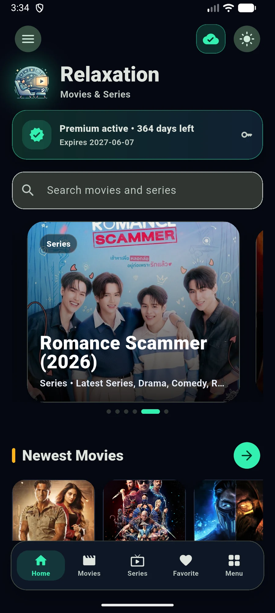

PROJECT / MOVIES & SERIESApp interface

RelaxationWindows · Android
MOVIES & SERIES
Relaxation
PROJECTA movie and series app with built-in playback, a personal library and offline downloads.
Project details
Relaxation brings search, favorites and a built-in video player into one Flutter app for Windows and Android. Playback history, resume controls and an offline library help viewers continue across sessions.
- Movie and series search
- Favorites and personal library
- Playback history and resume
- Offline media downloads
Built with: Flutter, Dart, Firebase, Telegram, Telethon